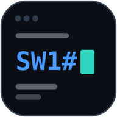
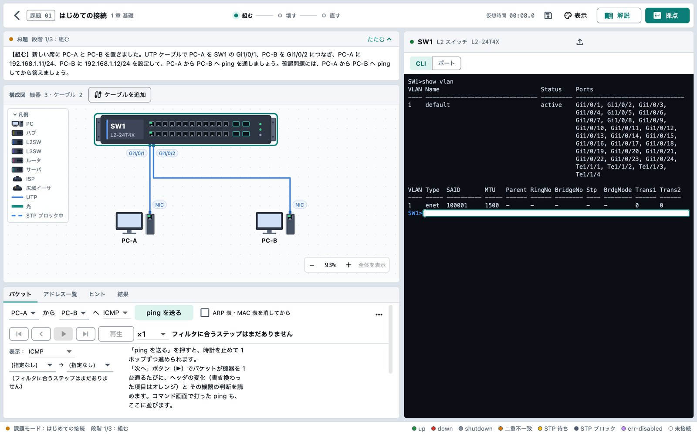
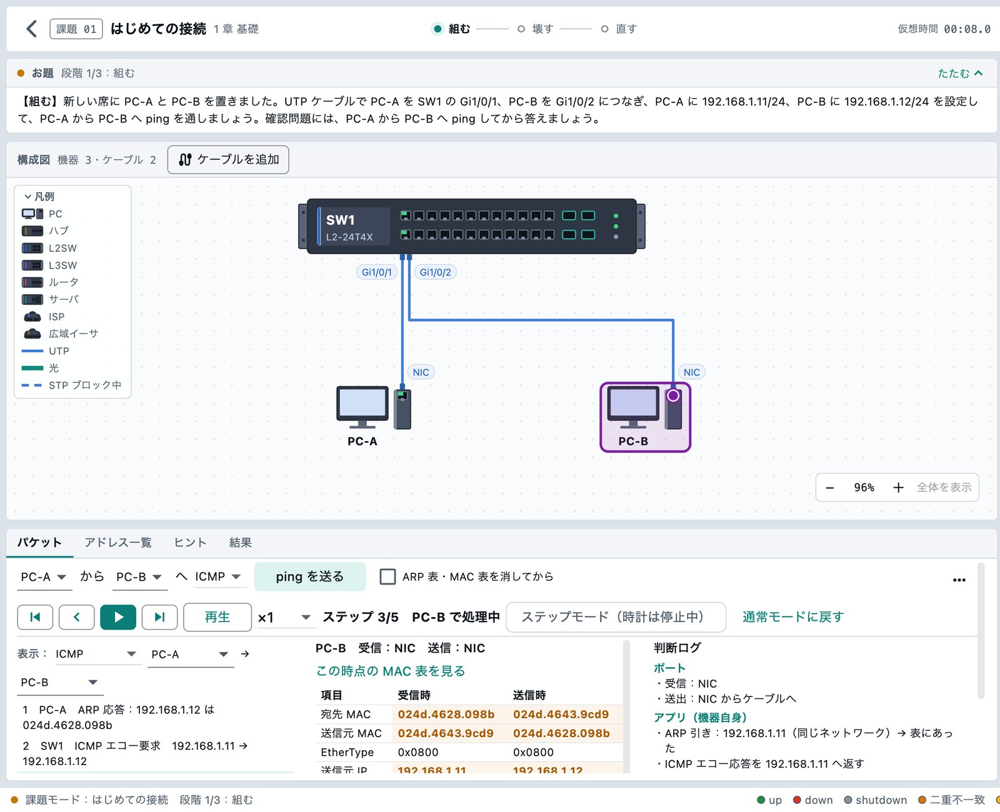
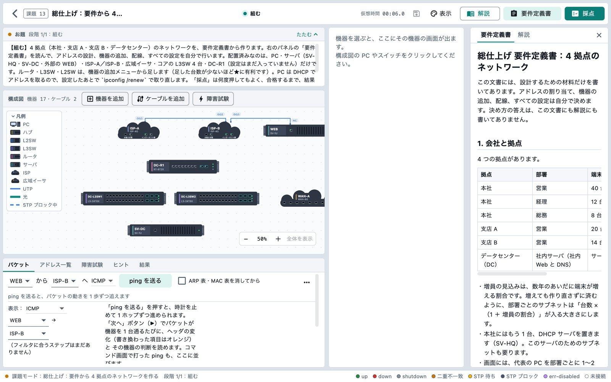
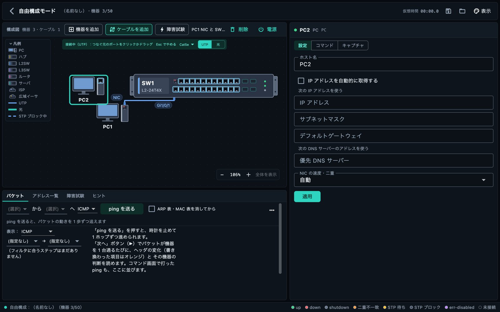
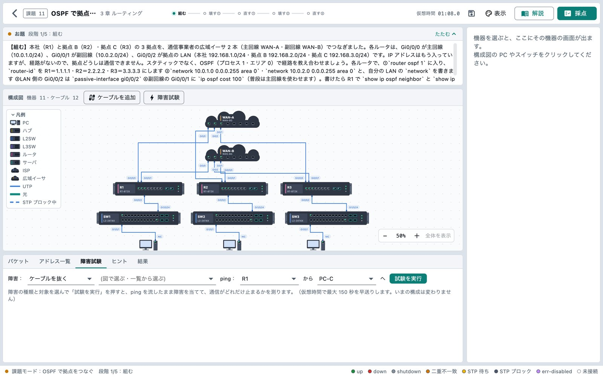

ネットワーク構築
シミュレータ
L2／L3 のネットワークを、Cisco 風の CLI で「組む → 壊れる → 直す」をくり返して学ぶ演習ソフトです。無償で、インストール不要。Windows と Mac で使えます。
- Windows
- Mac
お知らせ
1.1.0 を公開しました（2026-11-22）。
- リンクの束ね（EtherChannel・LACP）に対応しました。
- スイッチのスタック（2〜4 台を 1 台として扱う）に対応しました。
- ルータで GRE トンネルと GRE over IPsec が使えるようになりました。
- OSPF の SPF の間隔を、新しい Cisco IOS XE の既定にしました。回線が切れたあとの経路の切り替えが速くなります。
- 課題を 3 本（LACP・スタック・GRE）追加して全 20 本になりました。課題の番号を、一覧の並びどおりに付け直しました。
- 自由構成モード：保存は 20 件まで。読み込みの一覧から、名前の変更と削除ができます。「名前を付けて保存」と、閉じるときの未保存の確認を追加しました。
- 画面や操作の使い勝手を改善しました。
- 前の版の保存データと課題の記録は、そのまま使えます。
1.0.0（2026-11-20）：最初の正式版
できること
課題モード
全 20 本の課題を順に解きます。流れは「組む → 採点 → 障害が起きる → 原因を調べて直す → 再採点」。ヒントは 3 段階で、見ないほど★が多くなります。課題ごとに、自分で読み進められる解説が付きます（別ウィンドウでも開けます）。
自由構成モード
機器を自由に置いて、好きな構成を組めます（最大 50 台）。保存と読み込みができ、保存した構成は一覧から名前の変更や削除もできます。「届かない原因」を診断するヒント機能も付いています。
本物らしい機器と CLI
機器は実機の前面に近い絵で描きます（RJ45 の口・SFP+・リンクランプ）。PC は Windows 風のコマンド（ipconfig・ping・tracert・nslookup・ssh・telnet）、スイッチとルータは Cisco 風の CLI（? ヘルプ・show・パイプ・複数行の貼り付け・設定の書き出しと読み込み）です。
中が見える
パケットのステップ実行（ヘッダの変化と、機器ごとの判断）、アドレス一覧、キャプチャ。障害試験では、ケーブルを抜く・電源を落とすなどを当て、通信が止まった秒数を測り、止まった理由を確かめられます。画面はライト・ダーク・システムの設定に合わせます。
スクリーンイメージ
掲載している画面は開発中のものです。実際の画面とは異なることがあります。










学べること
全 20 本の課題で、次のテーマを順に学びます。
- VLAN
- トランク
- VLAN 間ルーティング
- スタティックルート
- STP
- DHCP
- VRRP
- ACL
- NAT
- OSPF
- BGP
- 管理アクセス
- ゾーンベース FW
- LACP
- スタック
- GRE・IPsec
- 総仕上げ 2 本
総仕上げの 2 本は、要件定義書を読み、機器を足しながら 4 拠点のネットワークを一から作ります。
扱える機器
- PC
- ハブ
- L2 スイッチ（L2-24T4X）
- L3 スイッチ（L3-24T6X）
- ルータ（RT-8T2X）
- サーバ（SV-1U：DHCP・Web・NTP・DNS・SNMP 監視）
- ISP（インターネット回線）
- 広域イーサ（WAN-8G）
対象の人
- L2／L3 を手を動かして学びたい人
- 社内研修の教材として使いたい人（会社の研修での利用も無償です）
動作環境
- Windows：Windows 10 以降（64 ビット）
- Mac：macOS 12 以降（Apple シリコン・Intel の両対応）
使い方と初回の警告
zip を展開してから、Windows は network_sim.exe、Mac は network_sim.app を起動します。zip の中を開いただけでは起動しません。インストールは不要です。
このソフトには電子署名（Windows）・Apple の公証（Mac）がないため、初回起動時に警告が出ます。
- Windows：SmartScreen の画面で「詳細情報」→「実行」を選びます。
- Windows 11 の一部の PC では、「スマート アプリ コントロール」がブロックします。その PC では起動できません。回避はしないでください。
- Mac：開き方は macOS の版で違います。同梱の README.txt を見てください。
会社の PC でセキュリティ製品が止める場合は、無理に回避せず、IT 部門に相談してください。
前の版から更新するとき
- Mac：学習の記録は自動で引き継がれます。
- Windows：記録のファイル（progress.json・layout.json・saves・course_saves）を新しいフォルダへコピーするか、前の版の上に上書きして展開します。詳しくは同梱の README.txt を見てください。
利用条件
- 無償で使えます（個人の学習・会社の研修での利用を含みます）。
- 配布された zip を、中身を変えずにそのまま人に渡すのは自由です。改変したものの配布と販売はできません。
- 無保証です。このソフトを使ったことで生じた損害について、開発者は責任を負いません。
利用条件の正本は配布用リポジトリの README です。
Cisco・Catalyst など、このソフトに出てくる製品名・社名は各社の商標または登録商標です。このソフトは各社と関係がなく、各社の製品の動作を正確に再現するものではありません。